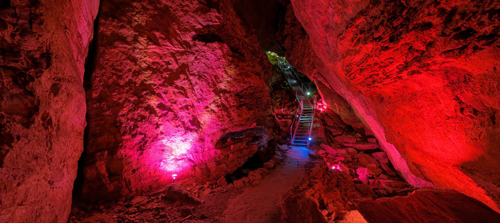

Minnetonka Cave is a fascinating 9-room cave of stalactites, stalagmites and
banded travertine that was originally found by grouse hunters. Don't miss one of the most striking
stalactites in the cave, called the Bride, known for its lacy appearance.Three stalagmites, over 10 feet
high, have diameters of nearly four feet. Enjoy a guided 90-minute, half-mile walk into this beautiful cave.
Be prepared for the 400 steps up and down in the cave and bring a jacket, since the cave is cool at about 40
degrees year round. The road up St. Charles Main Canyon is paved to the mouth of the cave.
The cave isn't accessible until mountain snows have melted. Visitors can tour the cave from June through
Labor day.
See our 360° Tour of Minnetonka Cave! (Click on the map in the lower righthand corner and click on the
marker for Minnetonka Cave.)
Attention! If you plan on visiting Minnetonka Cave please DO NOT wear any clothing (including shoes, hats,
belts, jewelry) or bring any items with you (such as cameras, backpacks, cell phones, purses, etc) that have
been in another cave or mine.
Due to the westward spread of White Nose syndrome (WNS), restrictions on clothing and items that have been
in other caves are currently in place at Minnetonka Cave to prevent introduction of this bat disease into
Idaho. It is possible for humans to spread the disease between caves if clothing or equipment has been
exposed to the fungus. Leaving clothing or other items that have been in another cave or mine at home will
help protect bat species inhabiting Minnetonka Cave. Introduction of this disease into Minnetonka Cave would
devastate local bat populations, and in the event of a cave closure, greatly impact local economies. For
more information on WNS and its current impacts to bats in North America visit http://whitenosesyndrome.org/
The Paris Ice Cave is also an interest landmark in the valley. Although not as spectacular as the
Minnetonka, visitors enjoy its interesting aura. Just follow the signs up Paris Main Canyon. This cave is
open year round but is only accessible by snowmobile during the winter months. Most years you can drive to
the cave June through October. If you'd like to check road conditions, contact the Montpelier Ranger
District by calling 208-847-0375.

by: Bear Lake Convention and Visitors Bureau